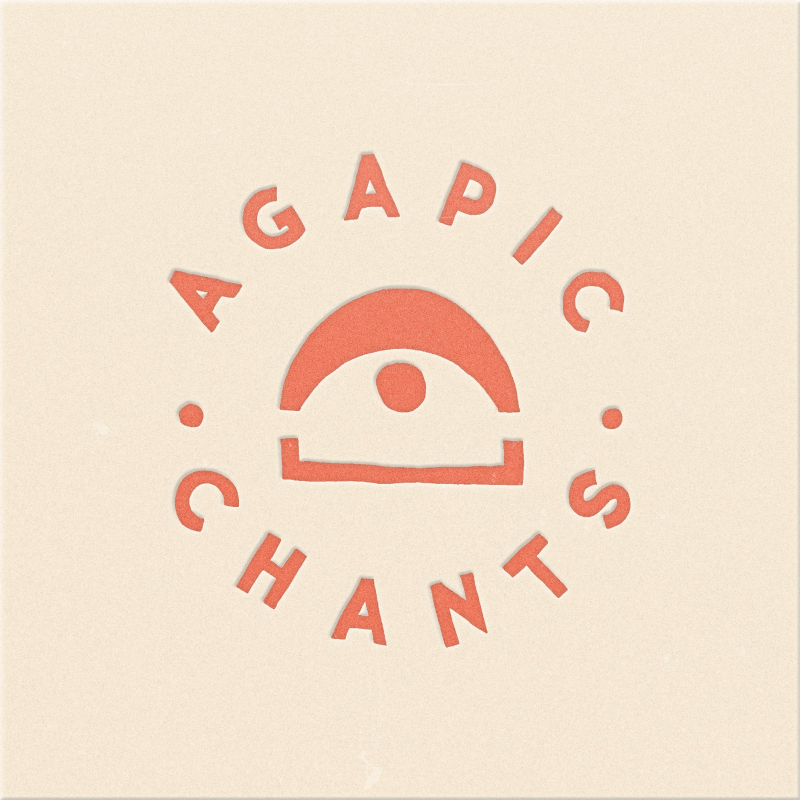

with Caro and Vivian · in {{ keyName }}
During "there is love," cast your attention as wide as possible. During "you are loved," bring it back into the space of your chest. Try to tune into the feeling of a good hug.
{{ shapeNote }}
Free to sing & share · CC BY-NC 4.0 · This chant was made with someone, in a room — agapicchants.com